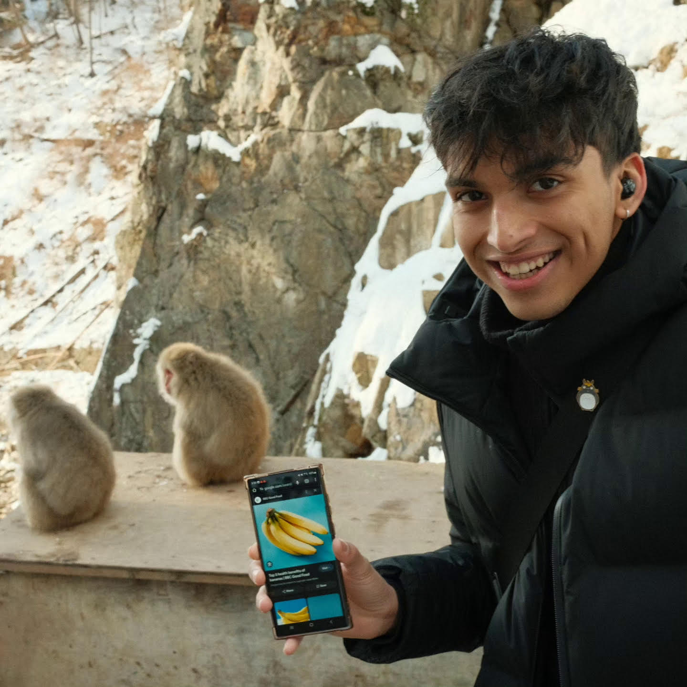

About me

I'm a UX designer currently working in Government, where im focused on delivering products and services with an empahsis on human centered, Inclusive design ensuring that anyone who uses our services have a seamless experience.
I've always had a passion for all things creative, whether it was drawing at home, doodling in my school diary during class or even trying to fold the fastest paper airplane from YouTube videos (still trying!) while I loved being creative, I didnt see a viable career path for me to channel that passion.
When I discovered UX design as a potential career path, I was ecstatic, a role that allowed me to express my creativity whilst also being able to bridge the gap between technology and design and create solutions that genuinely benefit people. UX design has sparked my curiosity to better understand human interaction and its role in creating intuitive and accessible products.
I have been fortunate enough to have the opportunity to work in a field I truly love, especially in Government where the focus is on designing services with people in mind , rather than profit